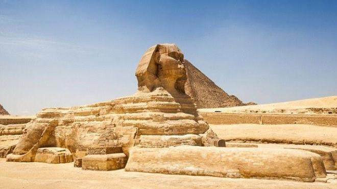

مقدمة
أبو الهول هو أحد أشهر المعالم في العالم، وأيقونة مصرية لا تقل أهمية عن الأهرامات نفسها. يقع في هضبة الجيزة أمام هرم خفرع، ويُعتبر أقدم تمثال ضخم باقٍ على وجه الأرض. يجمع تمثال أبو الهول بين جسد أسد ورأس إنسان، وهو تجسيد للقوة والحكمة في آن واحد. يعود تاريخ نحته إلى عصر الأسرة الرابعة، ويُرجح أن ملامحه تمثل الملك خفرع، رغم وجود نظريات أخرى ترجح أنه أقدم من ذلك.
سبب الشكل الرمزي لأبو الهول
لم يُنحت أبو الهول مصادفة؛ بل يحمل رمزية قوية. اختيار جسد الأسد يعود إلى أن الأسد كان رمز القوة والحماية في مصر القديمة، بينما الرأس البشري يرمز إلى العقل والحكمة. فكان أبو الهول بمثابة كيان يجمع القوة العقلية والجسدية، ليقف كحارس للجبانة الملكية التي تضم الأهرامات.
تاريخ النحت وارتباطه بالملك خفرع
يرجح علماء الآثار أن أبو الهول صُنع في عهد الملك خفرع، اعتمادًا على موقعه مقابل هرمه مباشرة، وعلى تشابه ملامح الوجه بين التمثال والتماثيل التي عُثر عليها للملك. إلا أن بعض الباحثين يرون أنه قد يكون أقدم من ذلك، وأنه ربما يعود لعصر ما قبل الأسرة الرابعة، مستندين إلى آثار التعرية المائية في جسده. وما يزال الجدل قائمًا إلى اليوم.
أبعاد التمثال الضخم
يبلغ طول أبو الهول تقريبًا 73 مترًا، وارتفاعه 20 مترًا، وعرض وجهه 4 أمتار تقريبًا. صُنع التمثال بنحت كتلة واحدة من الحجر الجيري الطبيعي الموجود في هضبة الجيزة، مما يجعله تحفة نادرة يصعب تكرارها. ولعل من أكثر الأمور إثارة أن التمثال نُحت مباشرة في الصخر وليس من أحجار متراكمة مثل الأهرامات.
سر اختفاء الأنف واللحية
من أشهر الأسئلة التي تُطرح: لماذا فُقد أنف أبو الهول؟ هناك عدة روايات، منها أن الأنف تحطم بفعل عوامل الزمن، ومنها أن جنود نابليون أطلقوا عليه المدافع، لكن النقوش والرسوم القديمة تكشف أن الأنف كان مفقودًا قبل زمن نابليون بقرون. أما اللحية فقد عُثر على أجزاء منها في المتحف البريطاني والمتحف المصري، ويُعتقد أنها أضيفت للتمثال في عصور لاحقة وليس وقت نحته.
تآكل التمثال وأسباب الأزمة
تآكل أبو الهول من أكبر التحديات التي واجهت علماء الآثار. التمثال يعاني من تفتت طبقات الحجر بسبب الرطوبة، والملوحة، وتغيرات الطقس. إضافة إلى ذلك، فإن المياه الجوفية وملوثات الهواء ساهمت في تدهور حالته، مما استدعى ترميمات عديدة في القرنين العشرين والواحد والعشرين للحفاظ عليه.
الحفر بين قدمي أبو الهول
توجد لوحة الحلم الشهيرة بين قدمي أبو الهول، والتي تعود للملك تحتمس الرابع. تقول الأسطورة أن تحتمس نام بجوار التمثال فرأى في المنام أن أبو الهول يخبره بأنه سيصبح ملكًا إن قام بإزالة الرمال التي تغطي جسمه. بالفعل كشف تحتمس عن التمثال وأصبح ملكًا، وأقام لوحة تكريمية تروي قصة الحلم.
الأساطير المرتبطة بأبو الهول
كما هو الحال مع أي رمز ضخم وغامض، ارتبطت بأبو الهول العديد من الأساطير؛ مثل وجود غرفة سرية تحت التمثال، أو أن له ممرات تقود إلى الهرم الأكبر، أو أنه من صنع حضارة أقدم من الفراعنة. ورغم جمال هذه الروايات، لم تثبت أي منها علميًا.
المسح الحديث واكتشافات القرن 21
استخدم العلماء تقنيات حديثة مثل الرادار والمسح ثلاثي الأبعاد لمعرفة ما يخفيه التمثال تحت سطحه. كشفت هذه الأبحاث عن وجود تجاويف طبيعية وممرات صغيرة، لكنها ليست غرفًا سرية كما تقول الأساطير. كما ساعدت التقنيات الحديثة في دراسة التآكل ومتابعة حالة التمثال بدقة.
أبو الهول في العصر الحديث ودوره السياحي
يُعد أبو الهول أحد أهم رموز السياحة في العالم، ويأتي ملايين الزوار سنويًا لمشاهدته والتقاط الصور بجواره. التمثال اليوم جزء من منظومة الأهرامات، ويُعد أيقونة في جميع الحملات السياحية التي تروج لمصر. كما يظهر على العملات والطوابع وشعارات عديدة.
خاتمة
أبو الهول ليس مجرد تمثال حجري ضخم، بل هو قصة أسطورة، ورمز حضارة، وحارس يقف صامتًا منذ آلاف السنين. ورغم مرور الزمن، ما يزال هذا التمثال يُلهم العلماء والزوار، ويثير الدهشة بجماله وغموضه وهيبته. إنه صورة خالدة لروح مصر القديمة وقوتها.
معرض صور

